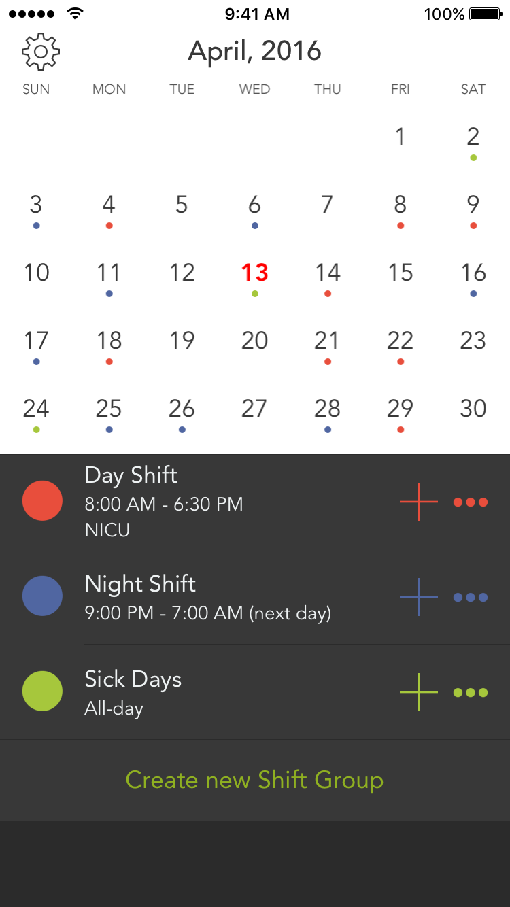
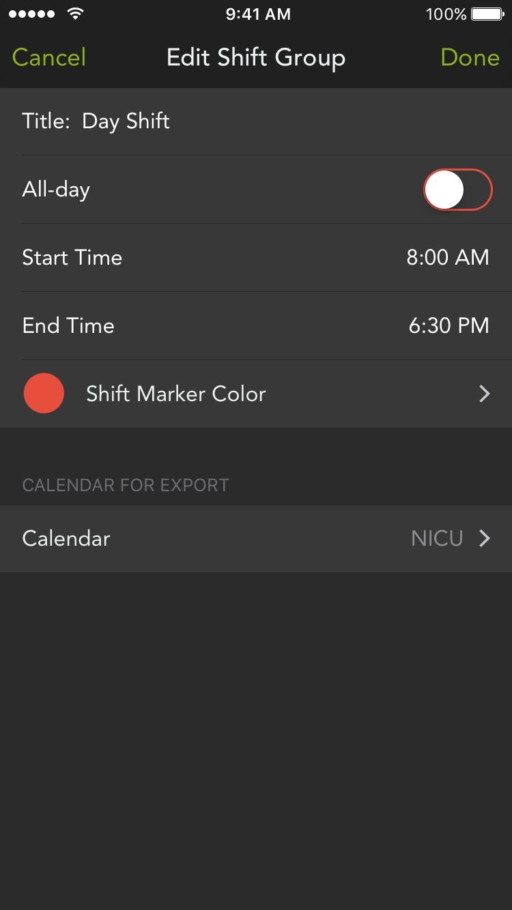
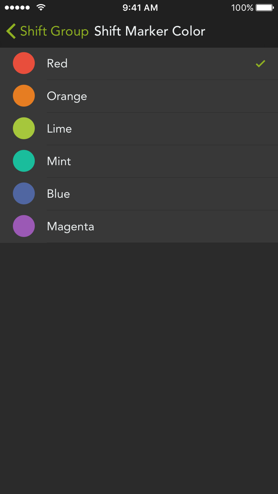

Press Kit



Product
Shifty is a simple shift calendar for all kinds of crazy schedules.
Shifty makes it easy to add and view events that always change, which are common among shift workers like nurses, doctors, retail staff, etc. These schedules are usually unpredictable, and adding them to a calendar is not the best experience on traditional calendar apps. Shifty allows users to easily tap to mark their work days, and export shifts all at once with the same start/end times. Users can further take advantage of iCloud calendar sharing to let family and friends see which days they work.
Features
- Simply tap on the dates you work to mark them
- Assign different start and end times for each shift
- Create up to 8 shifts to track different shift times, sick and vacation days, etc.
- Export shifts to any of your external calendars (Google Calendar, iCloud calendar, etc.)
- Have a photo of your schedule? Conveniently open it in Shifty and mark dates side by side
- Universal app with iPad support
- View your upcoming shifts on Apple Watch
- Quickly text your schedule via the iMessage app
Shifty has an IAP that unlocks additional shift groups.
About
I'm James Kuang, an iOS developer in NYC and I work on Shifty on my free time.